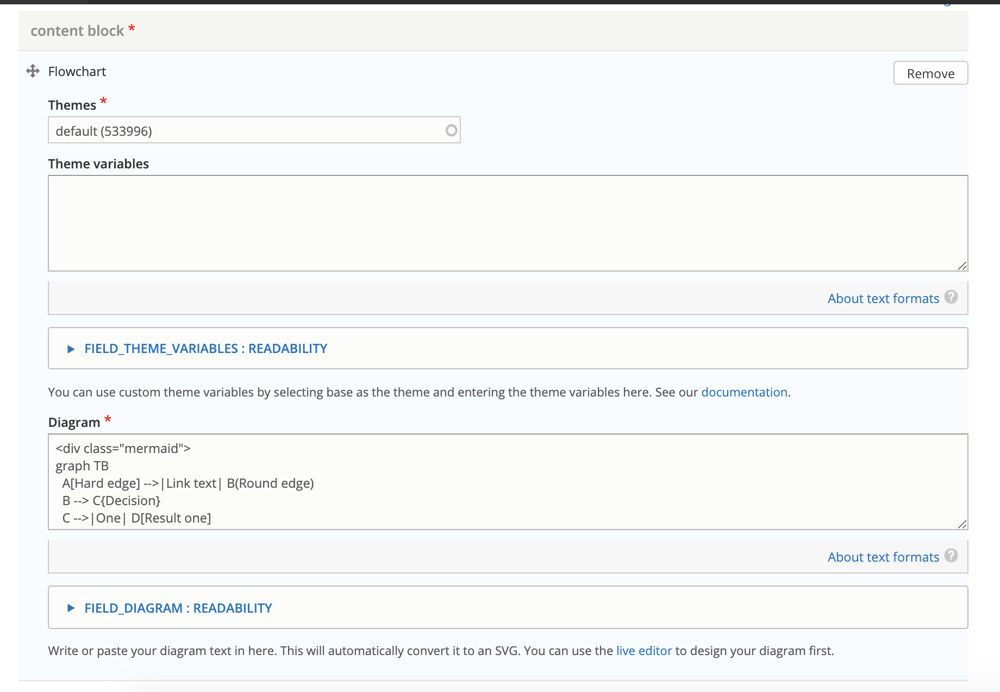
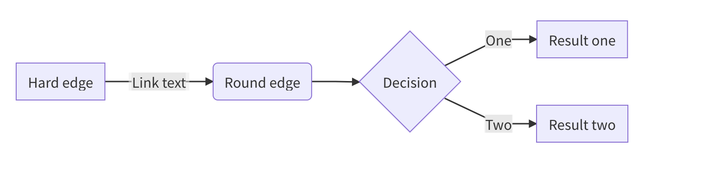
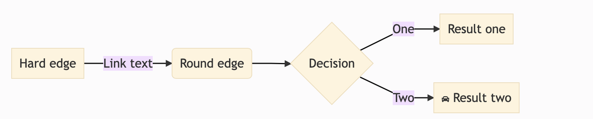
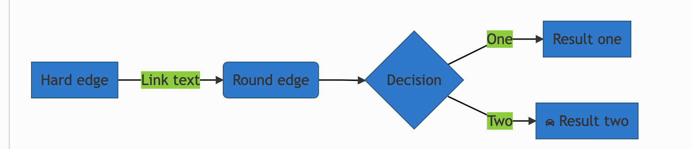

Flowcharts¶
Flowchart library¶
ILAO is using the Mermaid.js library to build and integrate Flowcharts and other diagrams into the website.
There is a live editor that can be used to build diagrams.
<div class="mermaid">
graph TB
A[Hard edge] -->|Link text| B(Round edge)
B --> C{Decision}
C -->|One| D[Result one]
C -->|Two| E[fa:fa-car Result two]
click D "https://www.illinoislegalaid.org" "Home"
</div>
In the above image:
the flowchart is set to be top to bottom (graph TB)
A, B, C, D, E are the ids of the 5 blocks
Text within | | are text between pathways, for example One between C & D
Both hard edge and round edge use the rectangle, but the round edge class has rounded edges.
Result one includes a hyperlink to our website with a tooltip of Home
Result two includes the car font-awesome icon.
Creating a Flowchart¶
For best results, use the Live Editor and then copy and paste your diagram into the CMS.
To create a flowchart, use the flowchart syntax documentation.
Customizing the look¶
The flowchart type supports two themes: default and base. The default theme can not be customized.
The base theme:
The base theme can accept additional variables, entered in the “theme variables” section to customize the theme.
For example, adding a theme variable of primaryColor to 0079d00 (ILAO’s blue) would result in this:
Theme variables would be added to the theme variables field in the format of “themeVariable”: “value”
"primaryColor": "#0079d0",
"secondaryColor": "#ccc"
Note
ILAO will design a standard visual design for flowcharts. Staff can use other themes as appropriate, or switch to the base theme and set custom theme variables.
Variables Supported¶
primaryColor = box fill color
Icon support¶
Mermaid supports the use of basic font-awesome icons. While ILAO has a pro account, only the basic class is currently supported.
Todo
determine if ILAO can add support for fal/fas clases in font awesome to support the additional icon sets.
Content format¶
Pages with a flowchart block will be saved with a content format of Flowchart. This will cause the flowchart label and icon to display on those pages.